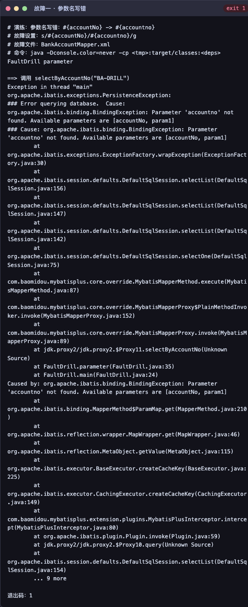
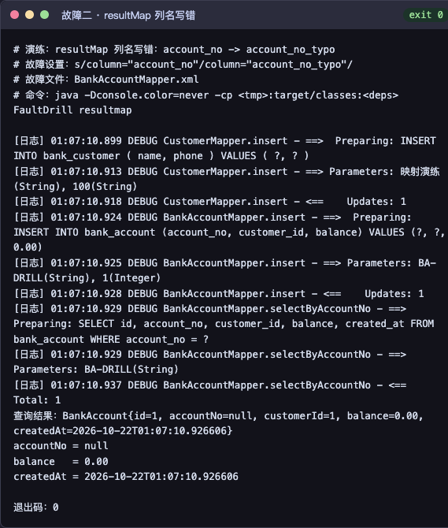
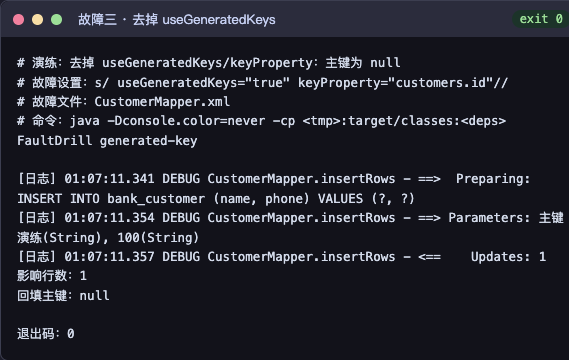

学院（系）名称：华信软件学院
| 姓名 | 张欣悦 | 学号 | 20241779 | 专业 | 软件工程 | 班级 | 2班 |
|---|---|---|---|---|---|---|---|
| 实验项目 | 实验一 MyBatis Lab（银行存取款管理系统） | 课程名称 | JAVA 框架技术（一） | ||||
| 课程代码 | 1960229 | 实验时间 | 2026.9—2026.10 | 实验地点 | 机房 | ||
| 批改意见 | 成绩 | ||||||
| 教师签字 | 日期 | ||||||
ssm_emp、emp 表及 JDK 8/11、JUnit 4 为参考内容；经老师确认，个人项目可自拟业务与版本。本项目采用银行三表模型与现代 JDK/JUnit 5。mybatis_demo，包含客户表 bank_customer、账户表 bank_account、流水表 bank_transaction。账户通过 customer_id 外键关联客户，流水通过 account_id 外键关联账户；账户余额有 CHECK (balance >= 0) 约束，流水有金额与余额一致性的检查约束。mybatis-config.xml 中设置项、类型别名、数据源、Mapper 注册的配置规范，并能排查依赖冲突。MyBatisUtil 维护全局唯一工厂、按业务操作开启/关闭会话的方法。#{} 参数绑定、自定义 resultMap、<sql>/<include> 列复用与自增主键回填。if、trim、set、foreach、choose/when/otherwise 的适用场景，理解多参数 @Param 命名与批量 SQL 的写法。三张表通过外键形成“客户 → 账户 → 流水”的层级关系，金额统一使用 DECIMAL(18,2)，并用 CHECK 约束保证余额不为负、流水金额与前后余额一致。
CREATE TABLE IF NOT EXISTS bank_customer (
id INT NOT NULL AUTO_INCREMENT,
name VARCHAR(50) NOT NULL,
phone VARCHAR(30) NOT NULL,
PRIMARY KEY (id)
) ENGINE=InnoDB DEFAULT CHARSET=utf8mb4;
CREATE TABLE IF NOT EXISTS bank_account (
id BIGINT NOT NULL AUTO_INCREMENT,
account_no VARCHAR(34) NOT NULL,
customer_id INT NOT NULL,
balance DECIMAL(18,2) NOT NULL DEFAULT 0.00,
created_at DATETIME(6) NOT NULL DEFAULT CURRENT_TIMESTAMP(6),
PRIMARY KEY (id),
UNIQUE KEY uk_bank_account_no (account_no),
CONSTRAINT fk_bank_account_customer FOREIGN KEY (customer_id)
REFERENCES bank_customer(id) ON DELETE RESTRICT ON UPDATE RESTRICT,
CONSTRAINT chk_bank_account_balance CHECK (balance >= 0)
) ENGINE=InnoDB DEFAULT CHARSET=utf8mb4;
CREATE TABLE IF NOT EXISTS bank_transaction (
id BIGINT NOT NULL AUTO_INCREMENT,
account_id BIGINT NOT NULL,
type VARCHAR(8) NOT NULL,
amount DECIMAL(18,2) NOT NULL,
balance_before DECIMAL(18,2) NOT NULL,
balance_after DECIMAL(18,2) NOT NULL,
created_at DATETIME(6) NOT NULL DEFAULT CURRENT_TIMESTAMP(6),
PRIMARY KEY (id),
CONSTRAINT fk_bank_transaction_account FOREIGN KEY (account_id)
REFERENCES bank_account(id) ON DELETE RESTRICT ON UPDATE RESTRICT,
CONSTRAINT chk_bank_transaction CHECK (
amount > 0 AND balance_before >= 0 AND balance_after >= 0 AND
((type = 'DEPOSIT' AND balance_after = balance_before + amount) OR
(type = 'WITHDRAW' AND balance_after = balance_before - amount))
)
) ENGINE=InnoDB DEFAULT CHARSET=utf8mb4;
MyBatis-Plus 3.5.7 内部依赖 MyBatis 核心，项目保留 MyBatis 3.5.16 作为显式依赖并统一由 MP 管理；通过 dependency:tree 确认没有重复的 MyBatis 版本冲突。非 Spring 环境下，MP 的部分默认方法需要 spring-core 的泛型解析能力，因此额外引入该依赖。
<dependency>
<groupId>org.mybatis</groupId>
<artifactId>mybatis</artifactId>
<version>3.5.16</version>
</dependency>
<dependency>
<groupId>com.baomidou</groupId>
<artifactId>mybatis-plus</artifactId>
<version>3.5.7</version>
</dependency>
<dependency>
<groupId>com.mysql</groupId>
<artifactId>mysql-connector-j</artifactId>
<version>8.4.0</version>
</dependency>
<dependency>
<groupId>log4j</groupId>
<artifactId>log4j</artifactId>
<version>1.2.17</version>
</dependency>
<dependency>
<groupId>org.junit.jupiter</groupId>
<artifactId>junit-jupiter</artifactId>
<version>5.10.2</version>
<scope>test</scope>
</dependency>
src/main/java ├── com/example/entity Customer、BankAccount、BankTransaction、TransactionType ├── com/example/mapper CustomerMapper、BankAccountMapper、BankTransactionMapper ├── com/example/service BankService（事务边界） ├── com/example/util MyBatisUtil、BankValidation、BankSchemaValidator └── org/example Main、BankConsole（控制台入口） src/main/resources ├── mybatis-config.xml、db.properties、log4j.properties └── mapper/ CustomerMapper.xml、BankAccountMapper.xml、BankTransactionMapper.xml src/test/java/com/example/bank └── BankServiceTest、CustomerMapperTest、BankInfrastructureTest 等 6 个测试类
项目路径下共 8 次提交（2026-09-17 至 2026-10-22），提交信息覆盖环境初始化、Mapper 测试、动态 SQL 完成、银行业务实现与任务清单核对；每个任务节点完成后提交一次，保留开发轨迹。
<configuration>
<properties resource="db.properties"/>
<settings>
<setting name="vfsImpl" value="com.example.util.VisibleFilesVfs"/>
<setting name="mapUnderscoreToCamelCase" value="true"/>
<setting name="lazyLoadingEnabled" value="true"/>
<setting name="aggressiveLazyLoading" value="false"/>
<setting name="logImpl" value="LOG4J"/>
</settings>
<typeAliases>
<package name="com.example.entity"/>
</typeAliases>
<environments default="development">
<environment id="development">
<transactionManager type="JDBC"/>
<dataSource type="POOLED">
<property name="driver" value="${jdbc.driver}"/>
<property name="url" value="${jdbc.url}"/>
<property name="username" value="${jdbc.username}"/>
<property name="password" value="${jdbc.password}"/>
</dataSource>
</environment>
</environments>
<mappers>
<mapper resource="mapper/CustomerMapper.xml"/>
<mapper resource="mapper/BankAccountMapper.xml"/>
<mapper resource="mapper/BankTransactionMapper.xml"/>
<package name="com.example.mapper"/>
</mappers>
</configuration>
@TableName("bank_customer")
public class Customer {
@TableId(type = IdType.AUTO)
private Integer id;
private String name;
private String phone;
// getter / setter / toString 略
}
public interface CustomerMapper extends BaseMapper<Customer> {
List<Customer> selectByCondition(@Param("condition") Customer condition);
List<Customer> selectByPriority(@Param("name") String name, @Param("phone") String phone);
int updateFields(@Param("customer") Customer customer);
int insertRows(@Param("customers") List<Customer> customers);
int deleteRows(@Param("ids") List<Integer> ids);
}
<mapper namespace="com.example.mapper.CustomerMapper">
<sql id="allColumns">id, name, phone</sql>
<resultMap id="customerMap" type="Customer">
<id property="id" column="id"/>
<result property="name" column="name"/>
<result property="phone" column="phone"/>
</resultMap>
<select id="selectByCondition" resultMap="customerMap">
SELECT <include refid="allColumns"/> FROM bank_customer
<trim prefix="WHERE" prefixOverrides="AND |OR ">
<if test="condition != null and condition.name != null and !condition.name.isBlank()">
AND name LIKE CONCAT('%', #{condition.name}, '%')
</if>
<if test="condition != null and condition.phone != null and !condition.phone.isBlank()">
AND phone LIKE CONCAT('%', #{condition.phone}, '%')
</if>
</trim>
ORDER BY id
</select>
<insert id="insertRows" useGeneratedKeys="true" keyProperty="customers.id">
INSERT INTO bank_customer (name, phone) VALUES
<foreach collection="customers" item="customer" separator=",">
(#{customer.name}, #{customer.phone})
</foreach>
</insert>
</mapper>
public final class MyBatisUtil {
private static final SqlSessionFactory FACTORY = createSqlSessionFactory(new Properties());
public static SqlSessionFactory createSqlSessionFactory(Properties properties) {
try (InputStream in = Resources.getResourceAsStream("mybatis-config.xml")) {
SqlSessionFactory factory = new MybatisSqlSessionFactoryBuilder().build(in, properties);
MybatisPlusInterceptor interceptor = new MybatisPlusInterceptor();
interceptor.addInnerInterceptor(new PaginationInnerInterceptor(DbType.MYSQL));
factory.getConfiguration().addInterceptor(interceptor);
return factory;
} catch (IOException e) {
throw new RuntimeException("加载 mybatis-config.xml 失败", e);
}
}
public static SqlSessionFactory getSqlSessionFactory() { return FACTORY; }
}
工厂全局只构建一次；业务写操作通过 openSession(false) 手动提交或回滚，查询与测试通过 try-with-resources 自动关闭会话。分页拦截器在工厂构建后以代码方式注册——这比写进 XML <plugins> 更可靠，因为 MybatisPlusInterceptor 的内部拦截器是列表，XML 的 <property> 只能注入字符串属性。
[日志] 00:09:18.391 DEBUG CustomerMapper.selectByCondition - ==> Preparing:
SELECT id, name, phone FROM bank_customer ORDER BY id
[日志] 00:09:18.391 DEBUG CustomerMapper.selectByCondition - ==> Parameters:
[日志] 00:09:18.391 DEBUG CustomerMapper.selectByCondition - <== Total: 1
┌─ 条件查询结果 · 共 1 条 ─────────────────────────────────────────────┐
│ 1. Customer{id=1, name=张三, phone=123} │
└───────────────────────────────────────────────────────────────────────┘
日志中的 Preparing 显示带 ? 的 SQL，Parameters 显示绑定实参与类型，Total 显示返回行数，可直接核对参数绑定与结果映射。
共 6 个测试类、42 个用例，每个测试类创建独立的 bank_test_ 数据库，结束后删除；写操作用例通过回滚或临时库隔离，保证可重复执行。
BankServiceTest 17 个用例（存取款、事务回滚、边界金额） CustomerMapperTest 8 个用例（BaseMapper CRUD、动态 SQL、批量操作） BankInfrastructureTest 7 个用例（配置、连接池、Schema 校验） BankConsoleTest 6 个用例（菜单流程、异常输入） BankConcurrencyTest 3 个用例（并发扣款） MainSmokeTest 1 个用例（启动真实 Main 子进程） 合计 42 个用例，全部通过
项目用 <trim prefix="WHERE" prefixOverrides="AND |OR "> 等效实现 <where>：有条件时自动补 WHERE 并去掉开头多余的 AND，条件全空时不生成 WHERE。日志验证三种情况：
条件：姓名=客户，电话=138
SELECT id, name, phone FROM bank_customer WHERE name LIKE CONCAT('%', ?, '%') AND phone LIKE CONCAT('%', ?, '%') ORDER BY id
条件：全空
SELECT id, name, phone FROM bank_customer ORDER BY id
条件：仅姓名=客户乙
SELECT id, name, phone FROM bank_customer WHERE name LIKE CONCAT('%', ?, '%') ORDER BY id
<select id="selectByPriority" resultMap="customerMap">
SELECT <include refid="allColumns"/> FROM bank_customer
<choose>
<when test="name != null and !name.isBlank()">WHERE name = #{name}</when>
<when test="phone != null and !phone.isBlank()">WHERE phone = #{phone}</when>
<otherwise><!-- 没有条件时查询全部 --></otherwise>
</choose>
ORDER BY id
</select>
分支命中即停：姓名优先精确匹配，否则按电话，最后退回全部；测试用例覆盖了三种分支与空白字符串输入。
<update id="updateFields">
UPDATE bank_customer
<set>
<if test="customer.name != null">name = #{customer.name},</if>
<if test="customer.phone != null">phone = #{customer.phone},</if>
</set>
WHERE id = #{customer.id}
</update>
<set> 自动去掉末尾多余逗号；未传入的字段保持原值，测试验证了“只改姓名”与“只改电话”两种场景。
<insert id="insertRows" useGeneratedKeys="true" keyProperty="customers.id">
INSERT INTO bank_customer (name, phone) VALUES
<foreach collection="customers" item="customer" separator=",">
(#{customer.name}, #{customer.phone})
</foreach>
</insert>
<delete id="deleteRows">
DELETE FROM bank_customer WHERE id IN
<foreach collection="ids" item="id" open="(" separator="," close=")">#{id}</foreach>
</delete>
批量插入采用单条 INSERT ... VALUES (...),(...)，减少网络往返；批量删除用 IN 一次完成。多参数方法显式使用 @Param("customers")、@Param("ids")，避免参数名绑定异常。
public interface CustomerMapper extends BaseMapper<Customer> {
// 自定义方法仍保留，XML 与 BaseMapper 共存
List<Customer> selectByCondition(@Param("condition") Customer condition);
}
default Page<Customer> selectCustomerPage(long current, long size, String name, String phone) {
BankValidation.page(current, size);
return selectPage(new Page<>(current, size), Wrappers.<Customer>lambdaQuery()
.like(name != null && !name.isBlank(), Customer::getName, name)
.like(phone != null && !phone.isBlank(), Customer::getPhone, phone)
.orderByAsc(Customer::getId));
}
Customer::getName 方法引用代替字符串列名，字段名错误在编译期暴露；like(condition, column, value) 的条件开关让空条件自动跳过。
[日志] DEBUG BankTransactionMapper.selectAccountPage_mpCount - ==> Preparing: SELECT COUNT(*) AS total FROM bank_transaction WHERE account_id = ? [日志] DEBUG BankTransactionMapper.selectAccountPage_mpCount - ==> Parameters: 1(Long) [日志] DEBUG BankTransactionMapper.selectAccountPage_mpCount - <== Total: 1 [日志] DEBUG BankTransactionMapper.selectAccountPage - ==> Preparing: SELECT id, account_id, type, amount, balance_before, balance_after, created_at FROM bank_transaction WHERE account_id = ? ORDER BY id DESC LIMIT ? [日志] DEBUG BankTransactionMapper.selectAccountPage - ==> Parameters: 1(Long), 10(Long) [日志] DEBUG BankTransactionMapper.selectAccountPage - <== Total: 2
分页拦截器先发 COUNT 统计总数，再发带 LIMIT ? 的查询，属于物理分页；业务总数从 Page.getTotal() 读取，日志中的 Total: 1 是 COUNT 查询返回一行统计结果，不是业务记录数。
“客户账单”按客户编号一次性查询其全部账户；“流水分页”先按账号定位账户，再按 account_id 分页查询流水。两次查询都只发一条 SQL，避免“先查主表再逐行查从表”的 N+1 问题。
<select id="selectByCustomerId" resultMap="accountMap">
SELECT <include refid="allColumns"/>
FROM bank_account WHERE customer_id = #{customerId} ORDER BY id
</select>
<select id="selectAccountPage" resultMap="transactionMap">
SELECT <include refid="allColumns"/>
FROM bank_transaction WHERE account_id = #{accountId} ORDER BY id DESC
</select>
return transaction(s -> {
BankAccountMapper mapper = s.getMapper(BankAccountMapper.class);
BankAccount account = requireAccount(mapper.selectForUpdate(number)); // 行锁
BigDecimal before = account.getBalance();
BigDecimal after = type == TransactionType.DEPOSIT
? before.add(money) : before.subtract(money);
if (after.signum() < 0) throw new IllegalArgumentException("余额不足");
if (after.compareTo(BankValidation.MAX_BALANCE) > 0)
throw new IllegalArgumentException("存款后余额超出允许范围");
if (mapper.updateBalance(account.getId(), after) != 1)
throw new IllegalStateException("余额更新失败");
BankTransaction entry = new BankTransaction();
entry.setAccountId(account.getId());
entry.setType(type);
entry.setAmount(money);
entry.setBalanceBefore(before);
entry.setBalanceAfter(after);
if (s.getMapper(BankTransactionMapper.class).insert(entry) != 1)
throw new IllegalStateException("流水写入失败");
return s.getMapper(BankTransactionMapper.class).selectById(entry.getId());
});
查询使用 SELECT ... FOR UPDATE 锁定账户行；余额不足、溢出或写入失败都会回滚，失败操作不产生流水。并发测试用 3 个用例验证多线程扣款不会超扣。
#{accountNo} 改成 #{accountno} 后，SQL 尚未发送就抛异常，日志直接列出可用参数。
org.apache.ibatis.binding.BindingException: Parameter 'accountno' not found. Available parameters are [accountNo, param1]

#{accountNo}。完整堆栈见 docs/fault-drill/logs/01-parameter-binding.log。column="account_no" 改成 column="account_no_typo"，SQL 正常执行且 Total: 1，但账号静默变为 null。
[日志] ... selectByAccountNo - <== Total: 1
查询结果：BankAccount{id=1, accountNo=null, customerId=1, balance=0.00, ...}

resultMap 的 column 与查询列名。Updates: 1），但回填主键为 null。
[日志] ... insertRows - <== Updates: 1 影响行数：1 回填主键：null

useGeneratedKeys="true" 与 keyProperty；批量插入的 keyProperty 指向集合元素属性（customers.id）。演练使用临时数据库与临时 classpath 覆盖故障版 Mapper，不改动 src 源码；每次演练后恢复原配置并重跑测试。完整日志与复现脚本见 docs/fault-drill/。
对 AI 生成的配置、映射与实体重点核对：依赖版本是否互相兼容、SQL 列名与真实表结构是否一致、resultMap 是否覆盖查询列、动态标签的空值边界（字符串判空、数值只判 null）、是否误用 ${} 拼接用户输入。本项目 SQL 映射中没有使用 ${}，所有用户输入均通过 #{} 绑定。
| 错误现象 | 可能原因与处理 |
|---|---|
BindingException: Parameter 'xxx' not found |
XML 占位符与接口 @Param 名称不一致；看异常中的 Available parameters，统一命名即可。 |
查询有行数但字段全为 null |
resultMap 的 column 与查询列名不一致，或驼峰映射未开启；对照列清单检查。 |
插入成功但主键为 null |
缺少 useGeneratedKeys="true" 或 keyProperty 路径错误；批量插入需指向集合元素属性。 |
| 分页返回全量数据 | 分页拦截器未注册。本项目在 MyBatisUtil 中注册 MybatisPlusInterceptor + PaginationInnerInterceptor；写进 XML <plugins> 会因无法注入内部拦截器列表而失效。 |
log4j.properties 中文前缀显示乱码 |
Log4j 1.x 按 ISO-8859-1 读取 properties；中文改用 Unicode 转义，如 [\u65E5\u5FD7]。 |
| 删除客户时抛外键约束异常 | 客户名下仍有账户，fk_bank_account_customer 为 ON DELETE RESTRICT；先处理账户或保留客户。 |
macOS 外部卷出现 ._* 文件干扰扫描 |
AppleDouble 元数据被 VFS 当作类/资源扫描；项目使用 VisibleFilesVfs 忽略隐藏元数据，Surefire 排除 **/._*。 |
dependency:tree 与测试，确认无 MyBatis 重复依赖、SQL 与表结构一致；金额、事务与并发用例全部实际执行。fc5a2df（任务清单核对）。typeAliases、三张表的 resultMap、<sql>/<include> 与 <trim>；调整控制台菜单顺序与结果框线，区分查询结果与 SQL 日志。ORDER BY id 被写坏，测试立即报 SQL 语法错误，修复后重跑通过，说明测试对配置类缺陷的拦截作用。BindingException；resultMap 列名错误静默返回 null；去掉 useGeneratedKeys 后主键为 null。演练结束后删除临时库并重跑测试。AI 能快速给出配置骨架与标签用法，也能在报错时提供定位方向；但它对“非 Spring 环境下的 MP 配置”“XML 中分页拦截器的写法”等约束把握不稳，容易给出形式正确但运行无效的配置。因此所有 AI 输出都以实际运行结果为准：以 mvn test、SQL 日志和数据库约束作为最终判据。
#{} 使用 PreparedStatement 预编译，SQL 中生成 ? 占位符，参数单独绑定，可防止 SQL 注入。${} 做字符串拼接，用户输入会直接进入 SQL，存在注入风险。#{}；只有表名、列名、排序字段等无法参数化的位置才考虑 ${}，且必须做白名单校验。#{}；动态排序没有开放给用户输入，避免拼接风险。MyBatisUtil 的静态字段持有。transaction() 中 try-with-resources 管理，成功提交、异常回滚。session.getMapper() 获取，是 MyBatis 动态代理对象，方法调用被转换成对应的 SQL statement。selectByCustomerId 一次取回该客户全部账户，流水按 account_id 一次分页查询，避免逐行查询。LambdaQueryWrapper。这次实验把配置加载、工厂构建、会话管理、Mapper 代理执行 SQL 的完整链路串了起来。基础 CRUD 阶段需要同时对齐实体属性、接口方法、XML statement 三处命名；动态 SQL 阶段则要逐条想清楚空值边界，<trim>、<set>、<foreach> 分别解决了多余 AND、末尾逗号与批量拼值的问题。接入 MyBatis-Plus 后，BaseMapper 与 Lambda 条件构造器减少了模板代码，但前提是工厂使用 MybatisSqlSessionFactoryBuilder 并正确注册分页拦截器。
银行三表模型让我体会到数据库约束与事务边界的重要性：账户行锁、余额更新和流水写入必须处于同一事务，否则会出现余额与流水不一致；CHECK 约束与外键则在数据库层兜底。调试过程中也确认了“编译通过不等于功能正确”：resultMap 列名错误与主键未回填都不报错，只能靠日志、断言与数据核对发现。
AI 在生成配置骨架、解释标签用法、提供排查方向上效率很高；本次故障演练的复现思路、报告结构也借助了 AI。但它对具体环境约束（无 Spring、MP 版本、XML 插件写法）容易给出想当然的答案，偶尔还会在批量修改文件时破坏原有 SQL。我的做法是把 AI 输出当作起点：先小步修改，立即编译并跑测试，再用 SQL 日志确认实际行为，确认无误后才保留。
提问时应一次给全环境、版本、已有配置与完整异常堆栈，并把问题缩小到单个方法或单个配置项。测试方面，后续可以补充批量插入的边界（空集合、超长 SQL）、并发场景下更细的锁等待验证，以及分页越界与排序白名单用例。ApiFox 请求练习本次未完成，需要在后续实验中补齐；同时可以尝试把控制台入口改造成 REST 接口，用 ApiFox 完成接口联调。